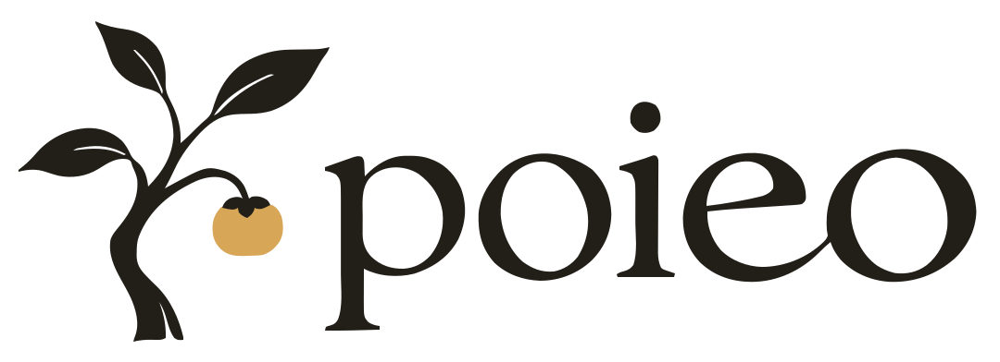
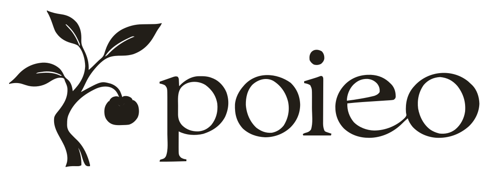
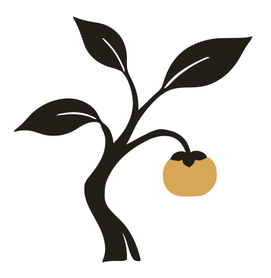

<!doctype html>
<html lang="en">
<meta charset="utf-8">
<meta name="viewport" content="width=device-width, initial-scale=1">
<title>poieo — Persimmon identity</title>
<link rel="icon" type="image/svg+xml" href="symbol.svg">
<style>
  :root { color-scheme: light; --ink:#221e18; --paper:#f8f5ef; --gold:#d8a657; --rule:#ded8ce }
  * { box-sizing:border-box }
  body { margin:0; background:var(--paper); color:var(--ink); font:15px/1.5 Georgia,serif }
  main { max-width:1280px; margin:auto; padding:40px 48px 32px }
  header { display:flex; justify-content:space-between; align-items:baseline; padding-bottom:18px; border-bottom:1px solid var(--rule) }
  h1 { margin:0; font-size:20px; font-weight:400 }
  header span,figcaption,footer { font:12px/1.5 Arial,sans-serif; letter-spacing:.03em }
  header span { color:#756d61 }
  figure { margin:0 }
  .primary { padding:48px 56px 34px }
  .primary img { display:block; width:100%; max-width:920px; height:auto; margin:auto }
  figcaption { display:flex; justify-content:space-between; gap:20px; margin-top:16px }
  a { color:inherit; text-underline-offset:3px }
  .pair { display:grid; grid-template-columns:1fr 1fr; border:1px solid var(--rule) }
  .pair figure { padding:28px 32px 20px }
  .pair img { display:block; width:100%; height:168px; object-fit:contain }
  .reverse { background:var(--ink); color:#f0e7d9 }
  .mono { background:#fff }
  .parts { display:grid; grid-template-columns:1fr 1fr; gap:64px; padding:28px 0 }
  .symbol-row,.wordmark-row { display:flex; align-items:center; gap:26px; height:98px }
  .symbol-row img { height:auto; display:block }
  .wordmark-row img { width:244px; max-width:100%; height:auto }
  footer { display:flex; flex-wrap:wrap; gap:24px; padding-top:18px; border-top:1px solid var(--rule); color:#756d61 }
  footer span { display:flex; align-items:center; gap:8px }
  i { width:12px; height:12px; display:inline-block; background:var(--ink) }
  .gold { background:var(--gold) }
  .ivory { background:#f0e7d9; border:1px solid #d9d0c2 }
  @media(max-width:650px) {
    main { padding:24px }
    .primary { padding:36px 0 28px }
    .pair,.parts { grid-template-columns:1fr }
    .parts { gap:28px }
    .pair img { height:130px }
    header span { text-align:right; max-width:130px }
  }
</style>
<main>
  <header><h1>poieo / Persimmon</h1><span>Brand marks</span></header>
  <figure class="primary">
    
    <figcaption><span>Primary</span><a href="poieo.svg" download>Download SVG</a></figcaption>
  </figure>
  <div class="pair">
    <figure class="reverse"><figcaption><span>On dark</span><a href="poieo-reversed.svg" download>Download SVG</a></figcaption></figure>
    <figure class="mono"><figcaption><span>One colour</span><a href="poieo-mono.svg" download>Download SVG</a></figcaption></figure>
  </div>
  <div class="parts">
    <figure><div class="symbol-row"></div><figcaption><span>Symbol</span><a href="symbol.svg" download>Download SVG</a></figcaption></figure>
    <figure><div class="wordmark-row"></div><figcaption><span>Wordmark</span><a href="wordmark.svg" download>Download SVG</a></figcaption></figure>
  </div>
  <footer><span><i></i>Ink / #221e18</span><span><i class="gold"></i>Gold / #d8a657</span><span><i class="ivory"></i>Ivory / #f0e7d9</span></footer>
</main>
</html>
